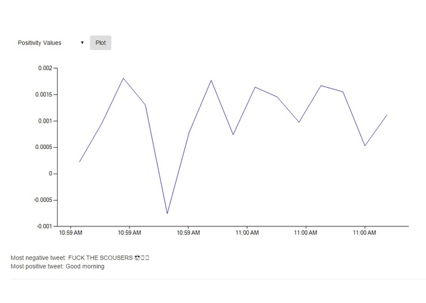

Tweetspace
Name
A program that retrieves specified tweets based on time and location, then performans sentiment analysis on them. Made in collaboration with David Zhang (Twitter API retrieval + backend, C#) and Jack Yan (Interface, ASP.net). I worked on natural language sentiment analysis using Python library nltk.